Cybersecurity · Common Threats
Man-in-the-Middle (MitM) attack
To fully understand this concept we must explain:

MitM attack brief general defintion
A Man-in-the-Middle (MitM) attack is an interception technique wherein a malicious actor secretly positions themselves between two communicating entities—such as a client computer and a remote server or local router—to eavesdrop on or manipulate the data exchange. In a successful MitM operation, all network packets transmitted between the legitimate endpoints pass directly through the attacker’s machine first, which then forwards them to their intended destination. Consequently, the communication appears completely uninterrupted, and neither party is aware that the channel has been compromised.
ARP Spoofing
One of the earliest practical methods for executing a network interception is ARP spoofing (or ARP poisoning). Local networks, such as open Wi-Fi networks, fundamentally operate on an implicit model of trust. An attacker connected to such a network can broadcast false announcements declaring their own machine to be the network router. Because the surrounding client computers and the actual router accept this declaration without verification, they begin routing all their packets to the attacker's computer first, which subsequently forwards the traffic to its legitimate destination. Historically (approximately 10 to 15 years prior to the widespread adoption of web encryption), this technique was particularly devastating because network traffic—including emails, websites, and passwords—was transmitted in unencrypted plain text. Provided the attacker possessed a sufficiently fast computer and network card, they could inspect the entirety of the local network's traffic and extract sensitive credentials directly.
HTTPS to counter ARP Spoofing
To neutralize the threat of plain-text eavesdropping resulting from attacks such as ARP spoofing, web communications rely on HTTPS, which combines the Hypertext Transfer Protocol (HTTP) with SSL (Secure Sockets Layer) or its standardized successor, TLS (Transport Layer Security).
HTTPS and TLS is explained in another webpage in our website, visit this page pressing HERE

Certificate Authorities (CAs)
To prevent an attacker from substituting public keys during the initial handshake, the TLS ecosystem relies on signed certificates issued by trusted third-party organizations known as Certificate Authorities (CAs).
When an administrator sets up a secure web server, they generate a public and private key pair and transmit the key information over a known secure channel to a CA. The CA verifies the identity of the applicant and confirms that the keys genuinely belong to that specific server and domain. Once verified, the CA mathematically signs the server's public key using the CA's own closely guarded private key.
When a user connects to the server, the server presents its public key accompanied by the CA's digital signature. If a MitM attacker alters even a single bit (a single 1 or 0) of the server's public key, the mathematical verification of the signature fails. Furthermore, because the attacker does not possess the CA's private key, they cannot forge a valid signature for their own replacement key. Any attempt to interfere triggers a prominent browser security warning, alerting the user that the connection is compromised. To validate these signatures without fetching CA keys over an insecure connection, operating systems and web browsers come pre-installed with a root list of trusted CAs and their corresponding public keys, establishing a complete network of trust.
Possible remaining vulnerabilities of the CA system
Compromise of a Certificate Authority:
If an attacker or state actor coerces a CA or steals its private keys, they can mint fraudulent yet cryptographically valid certificates for any domain.
Manipulation of the Local Trusted Root Store:
If an unauthorized entity inserts itself into the pre-installed list of trusted CAs on a user's device, it can dynamically generate and sign fraudulent certificates on the fly, intercepting all encrypted traffic from that machine without triggering browser warnings.